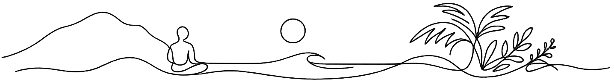

★★★★★
"Oceanic es una experiencia única y diferente. Su entorno, paz y tranquilidad. Sin contaminación sonora, eso es fundamental en unas vacaciones."
Adriana Massanti · GoogleUn lugar donde el entorno acompaña el proceso de su grupo. Espacio, silencio y tiempo.

Puerto López conserva un ritmo distinto. El sonido del mar, el movimiento del viento y la ausencia de ruido urbano crean un entorno donde los grupos pueden concentrarse sin distracciones.
Oceanic no busca ser únicamente un alojamiento frente al mar. El objetivo es ofrecer un entorno que facilite el descanso, la concentración y el trabajo grupal durante varios días.
Montañas, mar y piscina — el entorno que rodea cada retiro.
Cada grupo trabaja de forma diferente. Por eso Oceanic prioriza la flexibilidad del espacio, los horarios y la alimentación antes que imponer un formato único.
Prácticas al aire libre frente al mar o en espacios cubiertos cuando el programa lo requiera.
Espacios tranquilos para talleres intensivos, certificaciones y encuentros de varios días.
Encuentros orientados al descanso, mindfulness, respiración consciente, crecimiento personal y bienestar integral.
Espacios con privacidad y horarios adaptables para grupos que desarrollan procesos ceremoniales.
Cocina propia con opciones vegetarianas y posibilidad de adaptar menús según requerimientos del grupo.
Sin tránsito urbano ni ruido constante. El entorno sonoro está marcado por el mar, las aves y la naturaleza.
Espacio suficiente para grupos pequeños y encuentros de mayor escala.
La hostería dispone de 34 camas propias. Cuando el tamaño del grupo lo requiere, se coordina alojamiento complementario cercano para mantener al grupo reunido durante toda la experiencia.
Durante estos meses es posible incorporar el avistamiento de ballenas como una actividad opcional dentro del programa del retiro.
Consultar fechas disponibles4.5 sobre 5 · +350 reseñas en Google. Seleccionamos las que hablan del entorno, el silencio y la tranquilidad.
"Oceanic es una experiencia única y diferente. Su entorno, paz y tranquilidad. Sin contaminación sonora, eso es fundamental en unas vacaciones."
Adriana Massanti · Google"Al lado tranquilo del malecón de Puerto López, frente al mar. Solo escucharás el sonido de pajaritos y las olas."
Arlen Inmobiliaria · Google"Buen servicio al cliente y un espacio recreacional espectacular frente al mar. Hicimos yoga al atardecer y después nos bañamos en el mar."
Allyson Alemán · Google"Las noches muy iluminadas en el cielo y fuera del bullicio de la ciudad — vale la pena hospedarse a buen precio."
Juan Pablo Macías · Google"Excelente ubicación frente al mar y alejado del ruido. Cabañas muy limpias y con todas las comodidades."
karolinamm18 · TripAdvisor"Cabañas y habitaciones impecables, muy espaciosas y cómodas. Ubicación tranquila y lejos del ruido del centro, ideal para descansar."
Yamila Kloster · GoogleYoga, meditación, bienestar, mindfulness, formación terapéutica, medicina ancestral, desarrollo personal y otros encuentros grupales compatibles con el entorno de la hostería.
Hasta 60 personas compartiendo camas, 35 personas con una cama por huésped o aproximadamente 40 personas distribuidas entre habitaciones y cabañas.
Sí. El espacio cuenta con áreas abiertas frente al mar y sectores cubiertos que permiten adaptar el programa según las condiciones climáticas y las necesidades del grupo.
Sí. Se ofrecen opciones vegetarianas y es posible coordinar requerimientos alimentarios específicos con anticipación.
Existe transporte directo en bus hasta Puerto López. También puede accederse desde Guayaquil o Manta mediante conexión terrestre.
Indíquenos las fechas tentativas, la cantidad de participantes y el tipo de actividad que realizará. Le responderemos con la disponibilidad y una propuesta adaptada a las necesidades de su grupo.